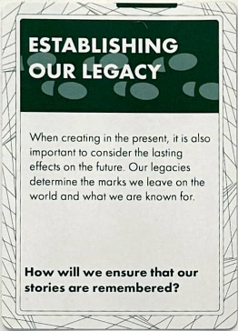
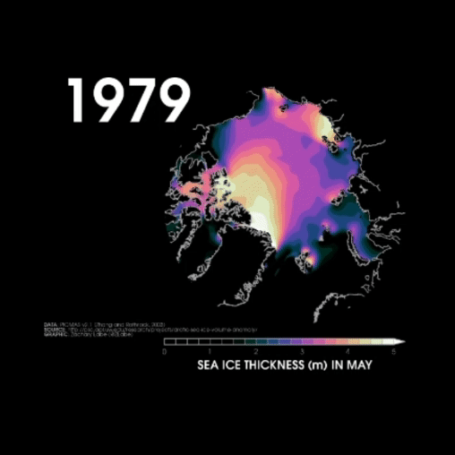

Speculative Design + AR Design
2023.11 - 2023.12
 This project is a speculative design, and the prompt question I picked is: How will we ensure that our stories are remembered in 100 years?
The concept of legacy involves the interconnection of many different aspects of human actions. Common ways of establishing a legacy include oral and written histories, shared memories, works of art and music, publications, objects of significance, etc. And stories will be remembered if they leave a lasting impression on the majority of people. Therefore, some ways to help build a legacy include: making information more accessible and long-lasting and deepening the impression of the story.
In my design, I focused on leaving a legacy for the Arctic.
The reason why I want to focus on this topic is because of the climate change problem. Due to human activities, the Arctic is under threat, and it is important to understand that what happens in the Arctic doesn’t stay in the Arctic but could drive warming and destabilization trends worldwide.
 The Arctic is warming nearly four times faster than the rest of the world and there is a GIF image showing the changes in the sea ice thickness over the years.
Some of the climate changes in the Arctic include thawing permafrost, disappearing sea ice, and shifting weather patterns. And these changes impact its community and threaten its lives and livelihood. For example, many wildlife are under threat and it will further cause challenges for local hunters and the availability of their traditional food. And in many Arctic regions, alternatives to traditional, locally sourced foods are unaffordable. To tackle this issue, many scientists are working hard to protect the Arctic community, but there are no easy answers as landscapes erode, infrastructure crumbles, and houses collapse. So learning about changes in the Arctic can better support the people who live there.
Thinking about this problem 100 years later in the context of Utopia, there will be more advanced technology for mitigating climate change. All societies will work together to implement sustainable practices and will distribute resources equally to minimize environmental impact.
Even though some aspects of climate change are already irreversible, I would expect the climate problem will be addressed more effectively and be mitigated in 100 years under the Utopia background.
In this case, we need to remember the story of the changes in the Arctic and our effort to address the issue. The story will let future generations know how we achieved the current state of climate change while raising awareness for them to continue to protect our environment and make the story continue.
For my solution of establishing our legacy, I will store the data of the environment in the cloud and utilize AR technology to create immersive experiences.
The general idea of the AR part was inspired by the REWILD Our Planet, which is an interactive exhibition of AR experiences that repairs the connection between human beings and the natural world.
I would expect my design of the AR experience to be multi-sensory so that people can feel more about the environment other than visuals and sounds, such as touch or temperature of the surrounding. The AR experience will transfer your surroundings into the Arctic to make you experience the beauty of nature in your home. The audience could also observe the changes in the Arctic over time. This approach could increase the interest in learning about the Arctic while deepening the impression of the story.
AR asset demo:
Thinking about this problem from the opposite perspective that is in the context of Dystopia, it is likely that the climate issues in the Arctic continue to worsen, the people who live there will have to leave their homes, and the rest of the world will suffer from extreme weather as a consequence.
Based on my solution, all the natural beauty of the past we recorded will only be the data in the cloud but no longer exist in reality. People could use that AR experience to imagine how the environment looked like years before and learn the causes and process of the change. And using that immersive experience to inspire further action to protect the environment.
SWOT Analysis of my solution:
Tools: Lens Studio
Snap code of my AR asset demo:
Reference
Resource: 3D Model Asset: https://sketchfab.com/3d-models/polar-e8372ba0f2454f59ac29db15b9331c6e